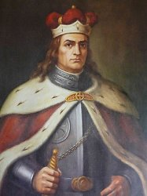
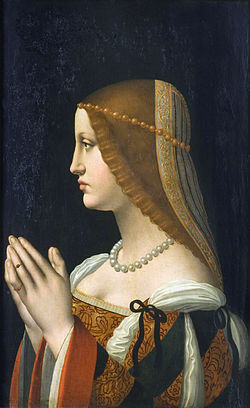

|
 |
Vytauto Didžiojo
laikų lietuvaičių apdarus aprašęs prancūzų keliautojas
riteris pažymi, kad lietuvės moterys savaisiais drabužiais
neatsilieka nuo prancūzių pikardiečių. Esą jos buvo
apsirengusios pagal paskutinę madą. |
| Karalienė Bono
Sforza (Sforca) atnešė į Lietuvą Šiaurės
Italijos, iš kurios ji buvo kilusi, drabužių madas. Vyrai dėvėjo drobinę palaidinę, liemenę, pūstas kelnes, pėdkelnes, ilgą švarką. Siautėsi plačiu apsiaustu, puoštu vovierių, bebrų, lapių, sabalų kailiu. |
 |